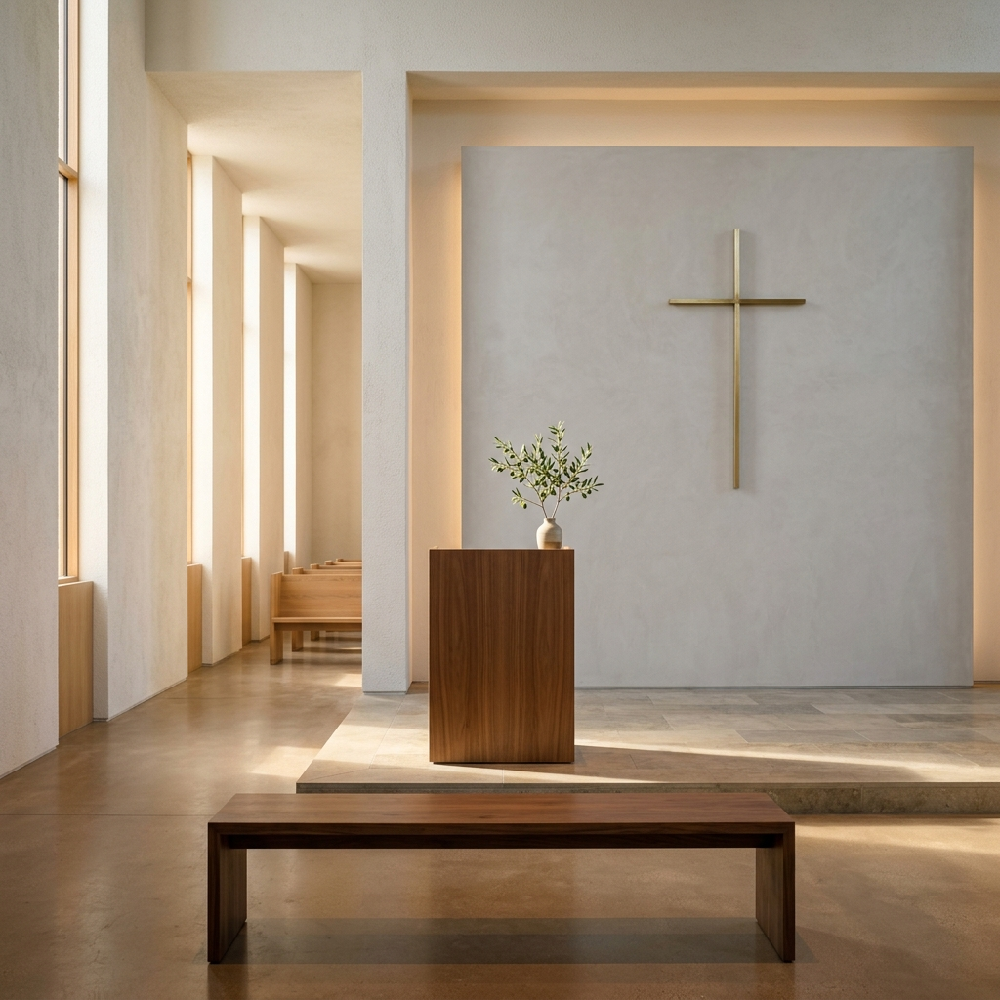

믿음의 든든한 반석 위에서 꿈을 펼쳐나갈 다음 세대 교육 부서와 활동 소식입니다. (행을 클릭하시면 상세 안내를 보실 수 있습니다)

예수님을 알아가는 흥미진진한 말씀 놀이터! 찬양과 재미있는 활동으로 신앙의 첫걸음을 바르게 내딛습니다. 매주 성령의 은혜 속에서 어린이들의 믿음이 무럭무럭 자라납니다.
| 대상 | 5세 ~ 초등학교 6학년 |
|---|---|
| 장소 | 본관 2층 마사흐채플 |
| 시간 | 매주 주일 오전 9:00 AM |
| 주요 활동 | 성경 공부, 인형극, 찬양 율동, 연간 성경 캠프 |
비전과 정체성을 찾아가는 성장 터전! 인격적인 만남과 깊이 있는 나눔으로 세상을 바꾸는 리더를 양성합니다. 친구들과 함께 찬양하고 말씀을 고민하며 건강한 자아를 확립해 나갑니다.
| 대상 | 중학생 및 고등학생 (14세 ~ 19세) |
|---|---|
| 장소 | 교육관 1층 예배실 |
| 시간 | 매주 주일 오전 9:00 AM |
| 주요 활동 | 제자 훈련, 소그룹 목장 모임, 청소년 찬양 집회, 문화 캠프 |
KFC(KwanYu FootBall Club)는 축구라는 스포츠를 매개로 하여, 학생들이 몸과 마음을 건강하게 가꾸고 친교하며 그리스도의 사랑을 훈련하는 청소년 동아리입니다. 초보자도 환영하며 즐겁게 훈련할 수 있습니다.
| 대상 | 축구를 좋아하는 어린이, 청소년, 청년, 장년 |
|---|---|
| 장소 | 내유동 인근 풋살장 및 지정 운동장 |
| 시간 | 격주 주일 오후 4:30 - 6:00 (2째주, 4째주) |
| 주요 활동 | 기본기 및 체력 훈련, 팀 매치, 지역 친선 경기, 간식 및 친교 모임 |
각 부서의 실시간 소식과 중요 공지를 확인하고 글을 남겨보세요.
| 번호 | 구분 | 제목 | 작성자 | 날짜 |
|---|